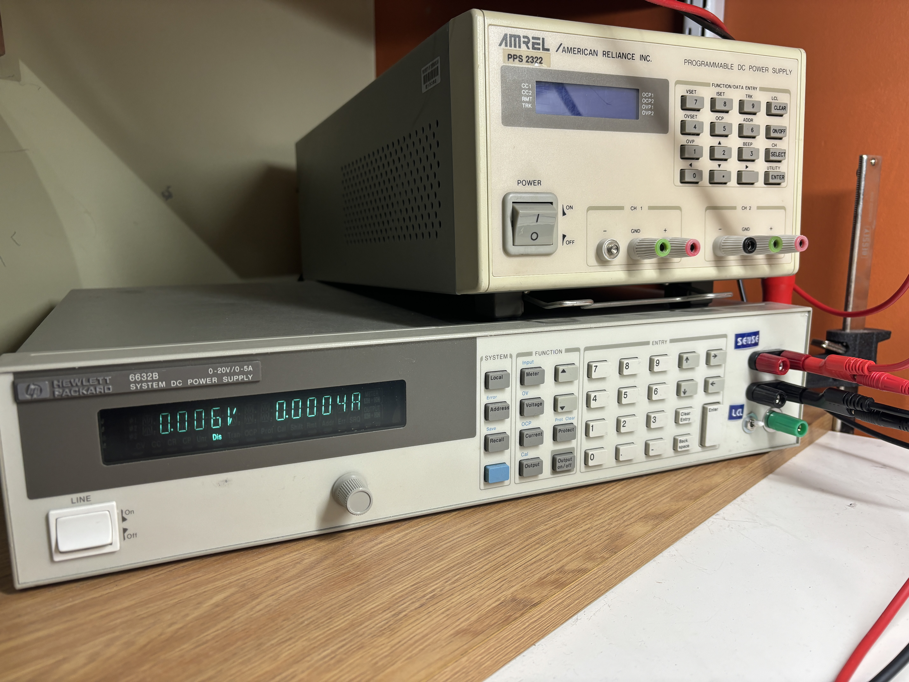
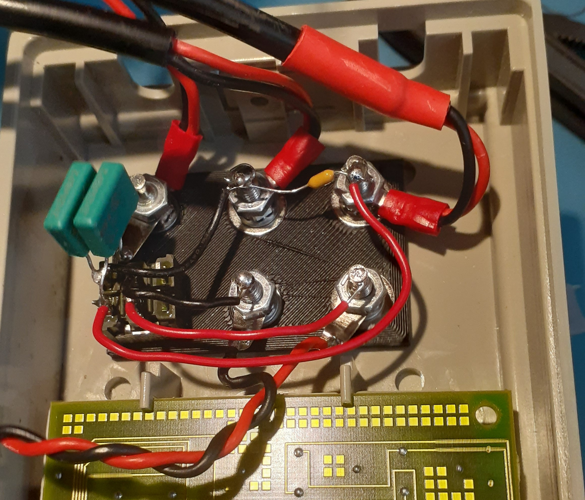
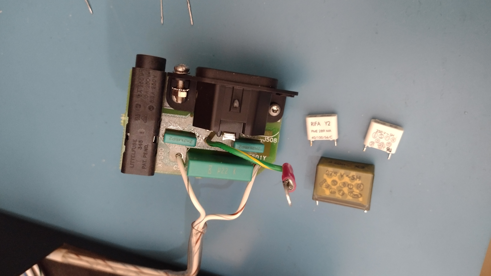
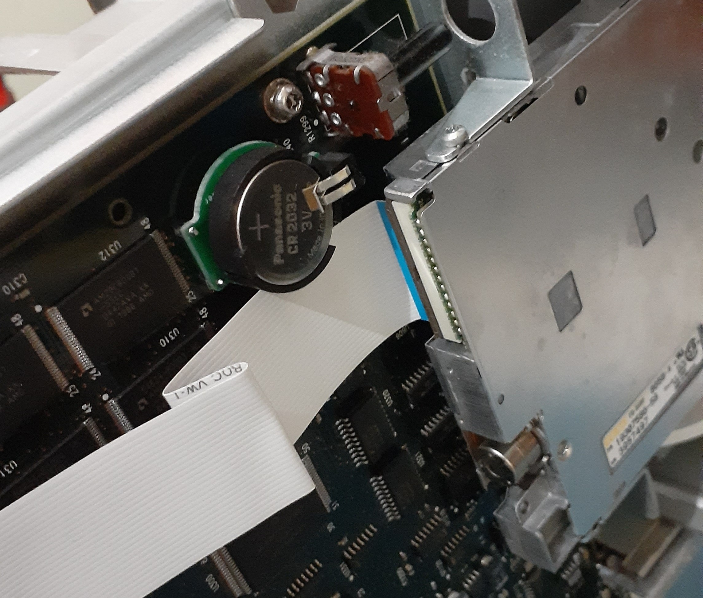
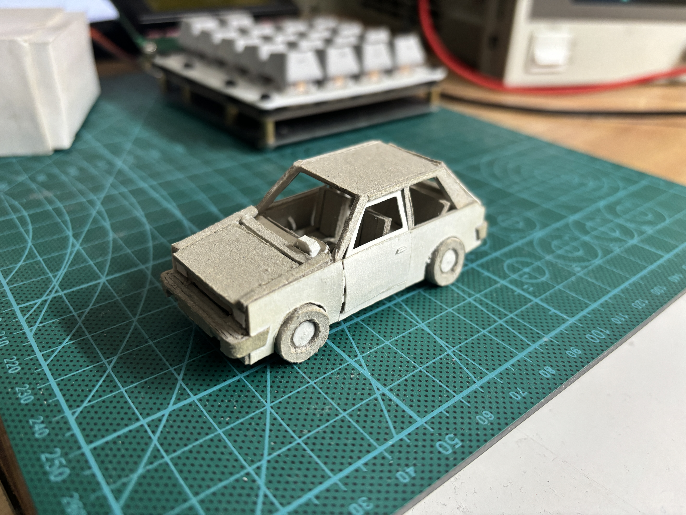
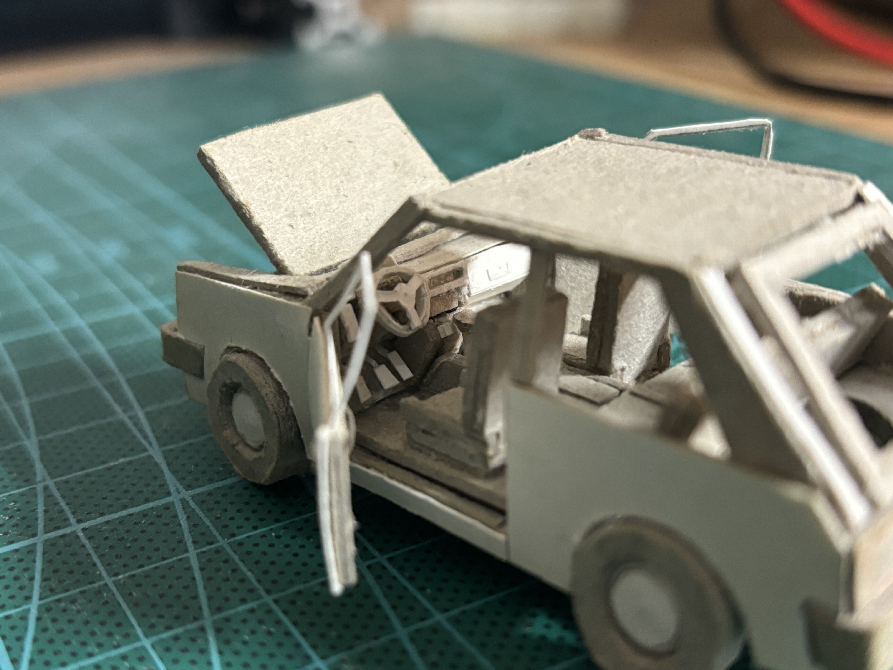
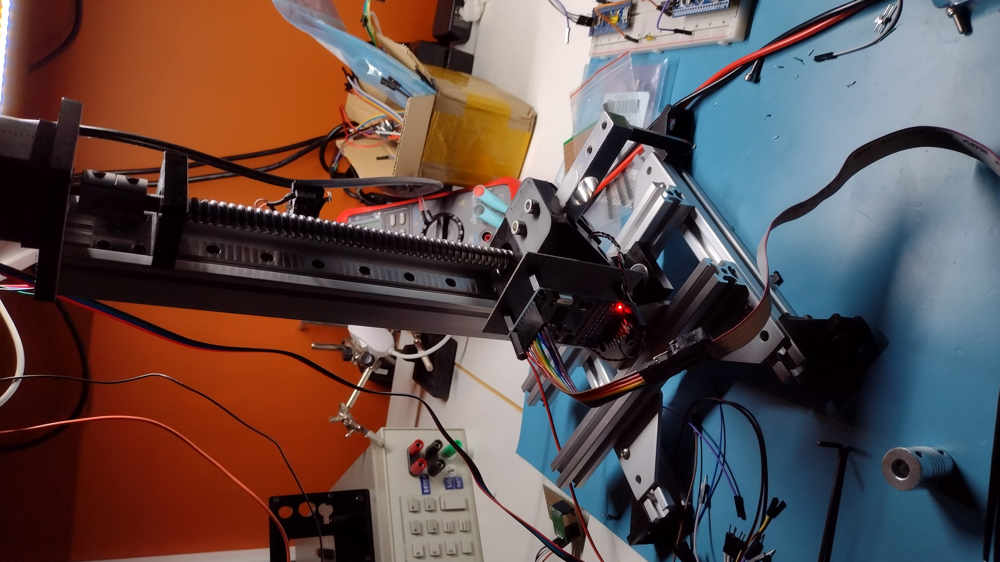

Olympus SZ3060

About my eclectic microscope setup. The SZ3060 is a lower-end model from Olympus, but it has excellent optics and good mechanical design.
(Full article)
6632B

This is my ancient 6632B (On top of it is a less ancient Amrel PPS-2322). Cool 0-20V power supply, and also can sink a programmable 0-5A in the second quadrant, like a pseudo electronic load. It has a couple of important mods:
- Added front output terminals
- RIFA caps replaced with new polymer caps
- New tantalum caps for the +/-15V regulators (and design errors corrected!)

The wiring behind the front panel. The sense lines can be directly connected to the outputs, or routed out to the sense terminals.

The mains filter with replacement caps fitted.

The output cables run all the way to this connector at the rear of the unit.
54624A

This is my ancient 54624A. It's another early MegaZoom II-powered unit, like the well-known 54622D. For everything ~20MHz and below, this is great. It's actually more responsive than the new Teks at my school.

This one came with a host of issues, most of them caused by a dead NVRAM backup battery. The original part is a very elusive CR2354-GUFN,
so it was replaced with a little socketed CR2032. Only the user cal and settings are stored in NVRAM, so mercifully it doesn't need to be powered while doing the replacement (unlike on some HP multimeters).

The new battery installed on the mainboard.
KP61 in 1/48 scale

Just for fun. It's a Toyota KP61 made from scratch out of paper.

A look inside the cabin.

A look inside the engine bay. I think that's meant to be a 4AGE in there.
Low-force tensile tester

This was a temporary testbed for SPI TFT displays, ADC interfacing, stepper driving using STM32. I'll need to rebuild this someday.
Gateron brown (keyboard switch) force vs. displacement curve as measured by a 1kg load cell.